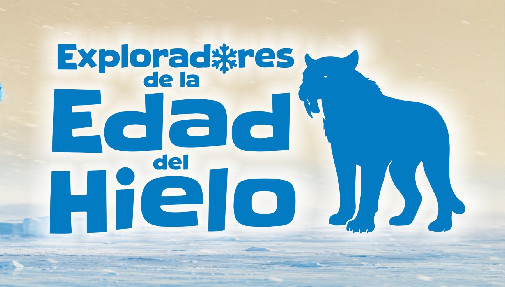

Fósiles
Objetos, huellas, restos y pistas para reconocer evidencias del pasado.
Talleres de invierno
Una propuesta del Museo Scasso para explorar la megafauna pampeana, los fósiles y el trabajo científico a través de actividades pensadas para infancias.
Reservas
Seleccioná edad, día y participantes desde el sistema de reservas.
Exploradores de la Edad del Hielo combina ciencia, juego y asombro para acercar a las infancias al mundo de los fósiles y los grandes animales del pasado.

Experiencias
Objetos, huellas, restos y pistas para reconocer evidencias del pasado.
Grandes mamíferos pampeanos, dientes, huesos y formas de vida extinguidas.
Juegos de búsqueda, observación, comparación y trabajo con materiales.
Actividades simples para mirar, tocar, preguntar y construir explicaciones.
Propuestas por edad
Cada grupo trabaja con actividades adecuadas a su edad. Los temas cambian según el taller elegido y el día seleccionado.
Anticipo visual
Fósiles, lupas, mapas, objetos y escenas de trabajo pensadas para una experiencia familiar, clara y cercana.


Lugar
Don Bosco 580, San Nicolás de los Arroyos, Provincia de Buenos Aires.
Reservas abiertas
Ingresá al sistema para elegir taller, día y cantidad de participantes.
Consultas info@museoscasso.com.ar